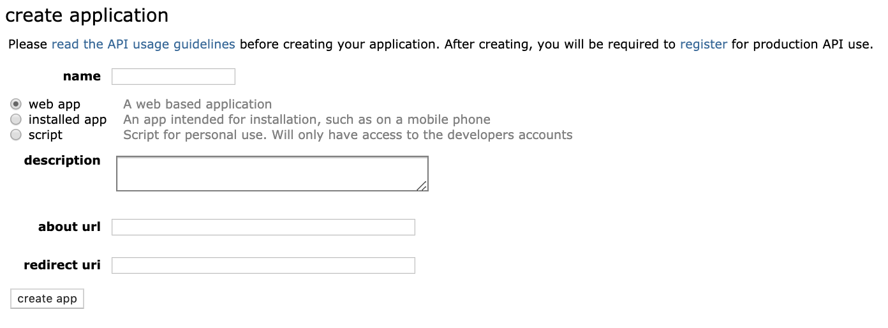
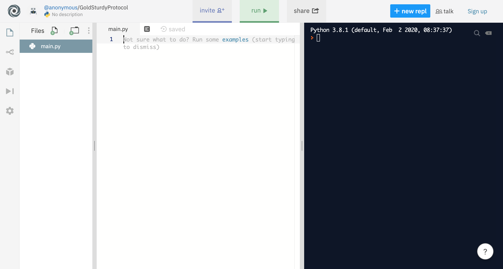
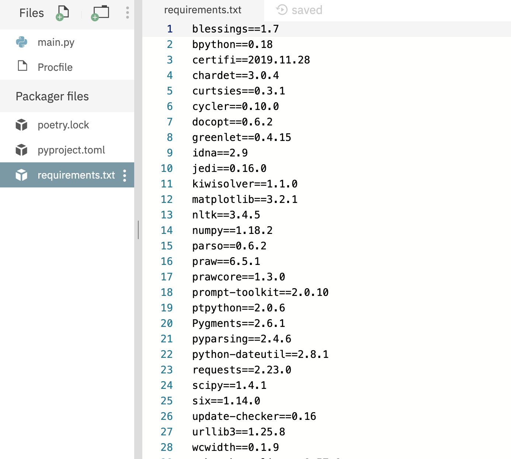
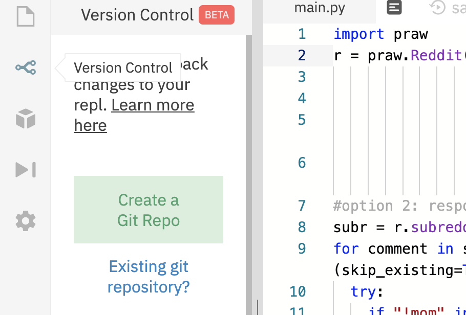
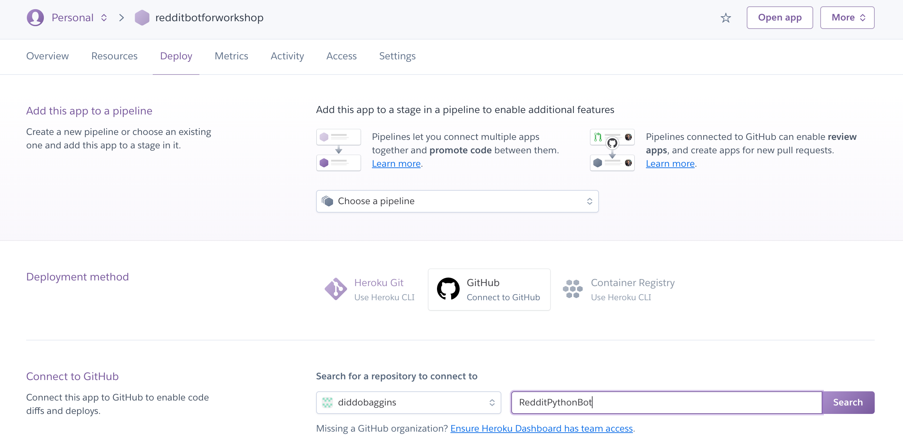
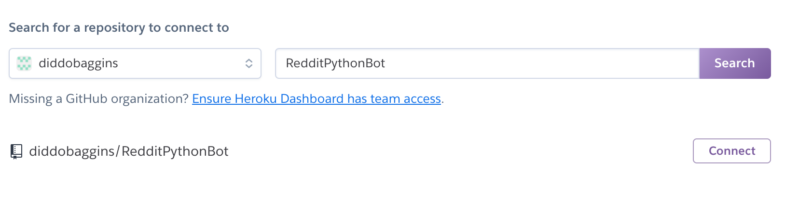
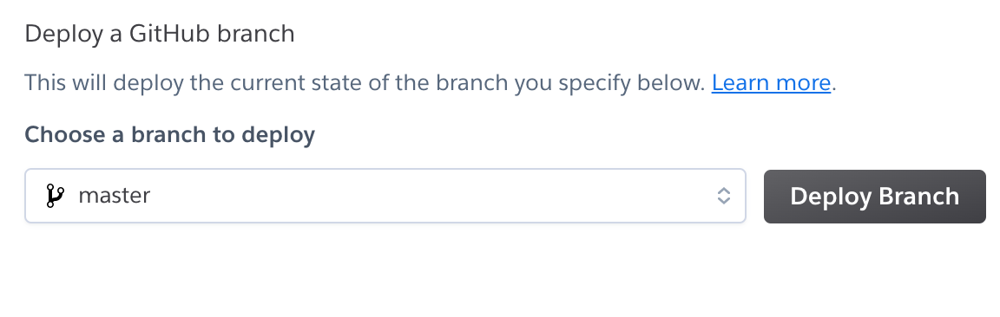
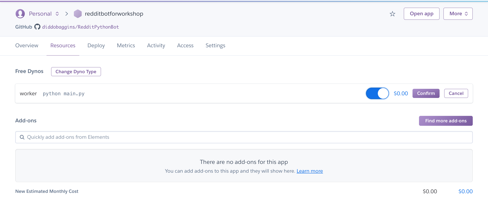
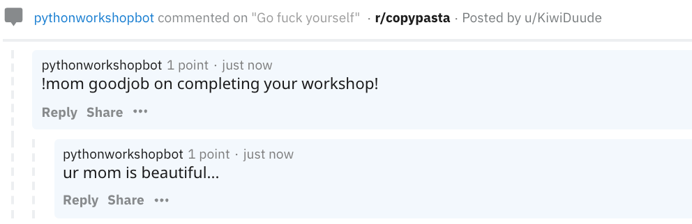
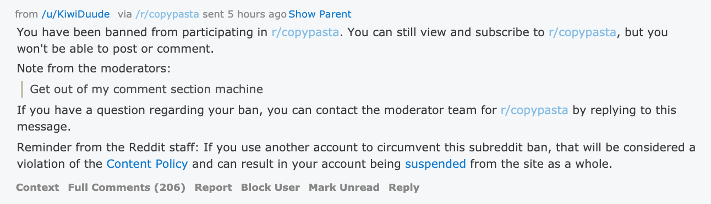

In this workshop, you can learn how to make an automated Reddit bot that does what you want it to do. I will show you how to make the bot respond to mentions as well as keywords. The possibilities are endless however. If you know your Python, you can make the bot do greater things. But today, we will focus on getting a simple bot up and running.
This workshop focuses on just making a bot work with browser only resources. This means you will need to use repl.it. Programs you make on repl.it aren't private though. Since you need to input information that gives access to your bot in your repl.it code, your bot will be accessible PUBLICLY. If you want to make it private, all you have to do is do everything in a local folder and your computer's shell. However, since I want this program to work for people without computer permissions, I will be showing you how to do everything on repl.it
Set Up
Before you make a bot, you need to do a couple of things.
First, you MUST read the bot etiquette. Bots can be a fun venture for new programmers, but Reddit seriously does NOT need a bunch of bots making mom jokes whenever someone says "mum" since we already have enough 9 year olds doing that. If you do not follow bottiquette, you will get your bot banned and perhaps your IP blacklisted. Coincidentally enough, this happened to the bot I made for this workshop.
Next, you'll need a reddit account. You can link your bot to your usual reddit account, or you can create a new one. If you are using free repl.it, you will need a new one because you will have to enter your account credentials and these will be visible to the public. (Note: You do not need to sign up with an email if you do not want.)
You'll also need to create an application "registration" for your bot. Use the link below.
Once you open the link, click "are you a devoloper". It should lead you to a page like this.
Give your bot a name. Select script. Enter http://127.0.0.1 into "redirect uri". (This is something stupid Reddit makes you do but...) Click "create app" and a page should pop up that tells you your "personal use script" and "secret". Record these two strings down. Remember, if you are using repl.it then these will be public along with your entire file.
Finally, you will need to access repl.it to program. With repl.it, you won't need to download anything to your actual device. You can use repl.it without an account, but if you wish to host then you will need to signup.
After clicking the link, click "start coding" and create a repl.it in Python. You should then have a page opened that looks something like this:

Next, you'll have to click control(command on Mac)+shift+p, which should open a command line shell at the bottom right. Copy the following line of code into the shell and press enter.
pip install praw
This should prompt your machine to import praw, which is a package neede for the bot. After the importing is finished, you have completed all the set up requirements! Next, we shall start coding.
Coding the Bot
Now we can get started on the code! Get on your main.py on repl.it and type or copy the following.
import praw
r = praw.Reddit(username = "yourreddituser",
password = "yourredditpw",
client_id = "yourclientid",
client_secret = "yourclientsecret",
user_agent = "yourbotname by /u/yourredditaccount")
Let's figure out what we just did. The first line imported our package. The second block of code initiated our praw instance. It is the Reddit object that basically acts as our bot, which we will need to control later to make our bot work. Fill each line out according to your own information. The client id and secret should have been recorded down if you were following the instructions from earlier. Your user_agent basically helps Reddit identify your program in case that is needed. So make sure it's descriptive!
Now I will show you two potential things you could make your bot do. First is responding to mentions, and the second is responding to
keywords.
These are mutually exclusive since they depend on automated streaming of different things. This means you have to choose one of the two, you cannot do both in one bot. You could use threading
to overcome this, but that is something you will have to figure out yourself.
Mentions
Many Reddit bots perform an action after being tagged. These sort of bots are preferred, because they only do things when they are called. This will be unlikely to get you banned and blacklisted. To get the basic code down, type or copy the following into your repl.it, BELOW the code that initiates the Reddit object. Please read the comments (words following a #) so you can learn a bit about what the commands actually do.
messages = r.inbox.stream() # creates an iterable for your inbox and streams it
for message in messages: # iterates through your messages
try:
if message in r.inbox.mentions() and message in r.inbox.unread(): # if this messasge is a mention AND it is unread...
message.reply("allhailfrank") # reply with this message
message.mark_read() # mark message as read so your bot doesn't respond to it again...
except praw.exceptions.APIException: # Reddit may have rate limits, this prevents your bot from dying due to rate limits
print("probably a rate limit....")
Keywords
This bot can check certain comments and, if there is a keyword in the comment, will do an action. Making the keyword something that is commonly said might get you banned. I suggest adding a "!" in front of your keyword so the bot only responds when called on. To get the basic code down, type or copy the following into your repl.it, BELOW the code that initiates your Reddit object. Remember, this code should not be in the same place as the code under the "Mentions" section. Please read the comments (words following a #) so you can learn a bit about what the commands actually do.
subr = r.subreddit('copypasta') # this chooses a subreddit you want to get comments from
for comment in subr.stream.comments(skip_existing=True): # this iterates through the comments from that subreddit as new ones are coming in
try:
if "!mom" in comment.body: # "!mom" is the keyword in this case. replace "mom" with your keyword
comment.reply("ur mom is beautiful...") # this is what your bot replies to the comment that has the keyword
except praw.exceptions.APIException: # Reddit may have rate limits, this prevents your bot from dying due to rate limits
print("probably a rate limit...")
Now your code is all good, and you just have to run it! Since your program will be streaming, it will not stop unless you tell it to.
You may have noticed that currently, your bot only runs when your repl.it program is running, which is only for as long as your tab stays open. Many people therefore host their bots on external servers so that the bot is truly automated. I will be showing you how to run your bot on a cloud platform, Heroku.
If you are satisfied without hosting your bot, then congratulations, you have completed the workshop!
If you would like to take it one step further, keep going!
Hosting
To host, you will need a GitHub accuont, which I am assuming you have, and a Heroku account, which we will deal with later.
Let's go back to our program on repl.it. Remember from earlier that to host you must have a repl.it account. First, let's create a new file and name it "Procfile" and type into it:
worker: python main.py
This is what it should look like on your repl.it page:

A Procfile basically tells Heroku what you want it to run.
Now we're going to need to create a requirements.txt to tell Heroku what our app's dependencies are. Creating a requirements.txt is good practice. All we need to do is control+shift+p again and type into the shell:
pip freeze > requirements.txt
A new file should pop up called requirements.txt that looks somewhat like this:

Next, you're going to need to go to version control on the side bar and connect your GitHub. It will prompt you to give permissions. You will need to give repl.it permission to all your GitHub repositories. Once you are done, you should be able to see something like this:
Click "Create a Git Repo". You can name it anything you want, but remember this name. It can be public or private, though remember due to repl.it your bot won't be fully private anyway. However, if you are using your own environment for privacy, make the repository private so people can't see your credentials. Now, everything should be linked to a repo on GitHub. Next, you'll need to sign up for a Heroku account.
After you create an account, you will need to "create an app". You can name it anything you want, that's available. Once your app is created, go to the "Deploy" section and click "GitHub".
Search for the repository that you just created. If you entered the correct name, it will show you your repository. Click "Connect".
Go to the very bottom, and click "Deploy Branch".
A small window will be visible that shows logs. After waiting for a minute or so, you will see the message "... deployed to Heroku". Now, you can go to the "Resources" section, where you will see your free dynos. Dynos are basically the container that will be running your app. Click the pencil icon to edit, turn on your dyno, and click confirm.
And... that's it! Congratulations, your bot is now automatically run by Heroku and will do what you programmed it to do!
One thing to note is that free accounts on Heroku can only run apps for a limited amount of time monthly. So using Heroku means your bot will die for a bit of time each month.
Interestingly, right after I finished this workshop, the Reddit bot I used in this workshop got banned by the subreddit I was running it in. This again shows the importance of following bottiquette. Keep in mind that mods can be megalomaniacs so they might ban your bot even if you do follow bottiquette. You can't do anything about that, but following bottiquette will minimize the chance of being banned.
